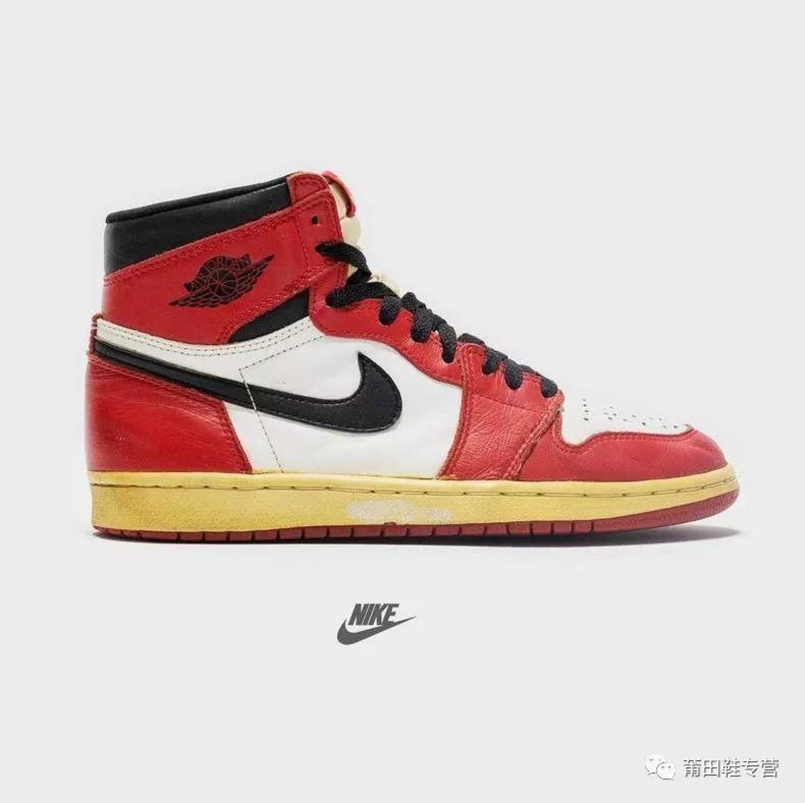
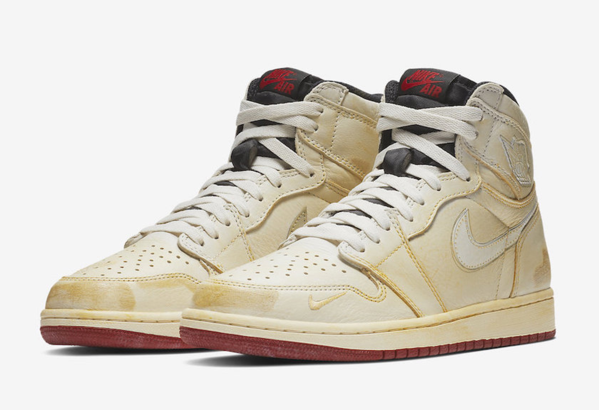

To really talk about the origin of sneaker culture, we have to go back to Converse rubber canvas shoes, which were born in 1917. After several years of development, Converse Chuck Taylor All Star series became the starting point of sneaker culture, which is why today's simple and seemingly ordinary rubber canvas shoes are still one of the most popular shoes in this era.
 

In 1861, vulcanized rubber technology was applied to shoes, marking the birth of modern athletic shoes. At the beginning of the 20th century, Japan, the United States, Germany, the United Kingdom and France began to study athletic shoes. The first research on athletic shoes was the coaches of sports events, followed by the manufacturers of athletic shoes, and later evolved into a joint research that closely combined the two. The world's major brands such as reebok, adidas, new balance, camel and puma have set up their own research institutes or think tanks to design and manufacture sports shoes with unique which represents the highest level of research and development and manufacturing of sports shoes in the world. Due to the continuous emergence of new sports items, research and meet the needs of these items, to provide new, multi-functional, alternative materials is the theme of the development of sports shoes, at the same time, on the basis of the original structure of sports shoes, to improve, make it more in line with the characteristics of sports is also more and more attention. In order to improve the appreciation of competitive sports and reflect the individual characteristics of athletes, the modeling is more beautiful, more typical and personalized. Apply a respect in colour, adopt a variety of colorific collocation, raise lightness, more bright-coloured degree to wait. Before the 1990s, the United States, Germany and Japan are the world's three largest countries i n the research, design and manufacturing of sports shoes. They have been leading the trend of world sports shoes and controlling the development trend of sports shoes. And the variety that athletic shoe produces is various, design diversity, colour is rich, design is changeful, stereo feeling is strong, clean and crisp sex is good, with dress comprehensive collocation, integral effect is harmonious. with deodorization performance has been developed.


Press back to go back.